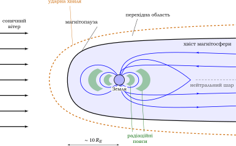
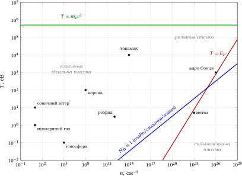

Елементи фізики плазми
0 Плазма довкола нас
Почнімо з того, що просто подивимося на плазму: числа й формули чекатимуть у наступних розділах. Спершу домовимося, що саме називаємо плазмою, а далі здійснимо екскурсію від космосу до лабораторії й техніки. За оцінками, понад 99 % звичайної (барионної) видимої речовини у Всесвіті перебуває в стані плазми. У цьому розділі нічого не виводимо: лише розглядаємо знімки й вчимося бачити на них фізику, яку з’ясуємо в наступних розділах. Частину об’єктів (іоносферу, корону, сонячний вітер, газовий розряд, токамак) знайдемо в табл. 2 і на діаграмі рис. 8 у § 0.5. Якщо якесь слово чи число здається незрозумілим, не зупиняйтеся: посилання вказує розділ, де це пояснено.
§ 0.1 Що таке плазма?
Плазма (від грец. plasma — виліплене, оформлене) — це частково або повністю іонізований газ, у якому густини позитивних і негативних зарядів практично однакові, а заряджені частинки поводяться колективно. Обидва виділені слова мають точний зміст, який ми з’ясуємо в розд. 1 (квазінейтральність — у § 1.3, колективність — у § 1.5). Термін «плазма» запропонував І. Ленгмюр наприкінці 1920-х років; 1929 р. Л. Тонкс і Ленгмюр описали власні коливання електронного газу (§ 1.3) [4].
Ступінь іонізації характеризують величиною
\(\seteqnumber{0}{}{0}\)\begin{equation} \label {eq:ionization-degree} \alpha = \frac {n_i}{n_i + n_n}, \end{equation}
де \(n_i\) і \(n_n\) — концентрації іонів та нейтральних частинок. У плазмі можуть одночасно бути присутніми електрони, кілька сортів іонів і нейтральні атоми чи молекули. Залежно від \(\alpha \) розрізняють слабо іонізовану (частки відсотка), помірно іонізовану (кілька відсотків) і повністю іонізовану (\(\alpha \to 1\)) плазму. Газ іонізується помітно вже за температур, значно нижчих за енергію іонізації атома (для водню \(13{,}6\) еВ); чому, пояснює формула Саха (§ 1.1).
Чим плазма відрізняється від нейтрального газу? Не просто наявністю заряджених частинок. У нейтральному газі частинки майже вільні й обмінюються імпульсом у короткочасних зіткненнях. У плазмі кулонівська сила спадає повільно (\(\propto r^{-2}\)): кількість частинок у сферичному шарі радіуса \(r\) зростає як \(r^2\), тож для впорядкованого (усередненого) відгуку сумарний внесок далеких частинок не менший, ніж близьких, і кожна заряджена частинка одночасно взаємодіє з великою кількістю інших. Сила, що діє на частинку, формується усередненим полем багатьох частинок, а не парними зіткненнями. Такі «колективні взаємодії» породжують екранування зарядів, плазмові коливання, хвилі й нестійкості. Тому плазма не зводиться до сукупності незалежних частинок: її макроскопічні властивості визначаються спільною електромагнітною взаємодією. Ступінь колективності задає число \(N_D\) частинок у сфері радіуса \(\lambda _D\) (§ 1.5): поле заряду на відстанях понад дебаївський радіус гасить не найближчий сусід, а спільний внесок цих \(N_D\) частинок (§ 1.4).
Друга особливість — тісний зв’язок механіки з електродинамікою. Плазма не лише рухається в зовнішньому електромагнітному полі, а й сама створює макроскопічні поля та струми, які діють назад на її рух.
Теоретичні відомості Температура в енергетичних одиницях
Температуру \(T\) вимірюємо в енергетичних одиницях (\(k_{\mathrm B}=1\), тож \(k_{\mathrm B}T\) пишемо просто як \(T\)); практично \(T\) дають в еВ, \(1\) еВ \(\approx 11\,600\) К. Температура — це параметр максвеллівського розподілу \(f\propto \exp (-mv^2/2T)\); середня кінетична енергія поступального руху \(\langle mv^2/2\rangle =\tfrac 32T\). Поки не сказано інакше, мова йде саме про такий розподіл. Для оцінок зручні числа (СГС): \(e=4{,}8\times 10^{-10}\) СГС, \(e^2\approx 1{,}44\times 10^{-7}\) еВ\(\cdot \)см, \(1\) СГС напруженості поля \(=300\) В/см.
З термодинаміки відомо, що стан газу задають \(p\), \(V\) і \(T\), але незалежних серед них лише два: їх пов’язує рівняння стану, для ідеального газу \(pV=NT\) (при \(k_{\mathrm B}=1\)). Зручно взяти інтенсивні величини, що не залежать від кількості речовини: \(n=N/V\) і \(T\); тоді тиск \(p=nT\) визначається ними. Так само й плазму (заданого складу) характеризують двома параметрами, \(n\) й \(T\) (для суміші сортів \(p=\sum _s n_sT_s\)). До того ж від \(n\) і \(T\) залежить уся специфічна для плазми фізика: ступінь іонізації (§ 1.1), дебаївська довжина (§ 1.4), число частинок у дебаївській сфері (§ 1.5), плазмова частота (§ 1.3). Тому плазму зображають точкою на діаграмі \(n\)–\(T\) (рис. 8); докладніше про температуру — у § 1.2.
Плазма виникає різними способами: термічною іонізацією (нагрівання), електричним розрядом, фотоіонізацією, ударною іонізацією, бомбардуванням частинками. Залежно від температури її поділяють на низькотемпературну (\(T\lesssim 10^5\) К, тобто \(\lesssim 10\) еВ) і високотемпературну (\(T\gtrsim 10^6\) К, тобто \(\gtrsim 100\) еВ; у термоядерних установках (токамаках — тороїдальних магнітних камерах) — до \(10^8\) К \(\approx 10\) кеВ і вище). Область між цими межами називають проміжною. Саме високотемпературна плазма потрібна для реакцій керованого термоядерного синтезу. Не варто плутати цей поділ з назвами «холодна» і «гаряча» плазма, які трапляються далі в теорії хвиль: там ідеться не про саме значення \(T\), а про те, чи істотний тепловий рух частинок для процесу, що розглядається (це пояснено там, де такі назви з’являються, і в Словнику термінів). Скільки в природі різних плазм і де вони лежать за \(n\) і \(T\), показано в § 0.5.
§ 0.2 Природна плазма
Всесвіт як плазма
Почнімо з самого початку. Плазма — не екзотика, а первинний стан видимої речовини. Приблизно перші 380 тисяч років після Великого вибуху Всесвіт був заповнений гарячою воднево-гелієвою плазмою: протони (разом із ядрами гелію це приблизно вся звичайна речовина), електрони й фотони. Фотони безперервно розсіювалися на вільних електронах, тож Всесвіт був непрозорий, як сяюча куля. Розширення охолоджувало плазму, і коли її температура впала до \(\sim 3\times 10^{3}\) К (близько \(0{,}3\) еВ, у \(\sim 50\) разів нижче за потенціал іонізації водню \(13{,}6\) еВ), електрони об’єдналися з ядрами в нейтральні атоми: настала рекомбінація. Відтоді світло летить вільно й дійшло до нас як реліктове випромінювання, охолоджене розширенням до \(2{,}725\) К (рис. 1).
Коли Всесвіт рекомбінував. Сьогодні концентрація атомів водню у Всесвіті — \(n_{H}\approx 2\times 10^{-7}~\mathrm {см}^{-3}\). Під час рекомбінації Всесвіт був менший у \(1+z\approx 1100\) разів за кожним виміром (\(z\) — червоне зміщення), тож \(n\approx 2\times 10^{-7}\cdot 1100^{3}\approx 2{,}7\times 10^{2}~\mathrm {см}^{-3}\). За формулою Саха (§ 1.1) для такої концентрації ступінь іонізації \(\alpha \) (§ 0.1) досягає \(1/2\) за \(T\approx 3{,}7\times 10^{3}\) К (\(0{,}32\) еВ), а за \(T=3\times 10^{3}\) К вона вже лише \(\alpha \sim 5\times 10^{-3}\). Температура реліктового випромінювання тоді була \(2{,}725\cdot 1101\approx 3\times 10^{3}\) К, тобто збігається з оцінкою за порядком.
Рівноважна формула Саха дає дещо вищу температуру, ніж справжня: у Всесвіті, що розширюється, рекомбінація не встигає за рівновагою. Важливо, що водень рекомбінує за \(T\approx 0{,}3\) еВ, а не за \(13{,}6\) еВ: на один атом припадає близько \(10^{9}\) фотонів, і навіть рідкісні фотони з «хвоста» планківського розподілу з енергією понад \(13{,}6\) еВ встигають іонізувати атоми; це той самий виграш ентропії вільних електронів, що й у § 1.1.
Неоднорідності на цій карті малі, порядку \(10^{-5}\) від середньої температури, але саме вони важливі: це відбитки звукових хвиль у первинній плазмі. Гравітація (передусім темної матерії) стискала плазму, тиск випромінювання розпирав її, і так вона коливалася, як струна (про коливання й хвилі в плазмі йтиметься в розд. 2). Зі зменшенням температури коливання «заморозилися», а потім з цих згущень виросли галактики. Пізніше випромінювання перших зір знову іонізувало газ (протягом першого мільярда років), і міжгалактичний газ, у якому зосереджена значна частина звичайної речовини, відтоді лишається плазмою — вкрай розрідженою (\(n\lesssim 10^{-5}~\mathrm {см}^{-3}\)), з температурою від \(10^{4}\) до \(10^{7}\) К.
Масштаби й структури
Природна плазма охоплює розміри від сантиметрів (канал блискавки) до світлових років (туманності) і концентрації від \(\sim 10^{-5}~\mathrm {см}^{-3}\) до \(10^{26}~\mathrm {см}^{-3}\). У розрідженій космічній плазмі зіткнень мало, а магнітне поле істотне. Тому на рис. 2 а, б, в ми бачимо переважно не «газ», а структури, задані полем. Об’єкти нижче впорядковано за масштабом: від центрів галактик через міжзоряне середовище й Сонячну систему до навколоземного космосу й атмосфери.
Дальній космос: чорні діри та джети
Сама чорна діра не є плазмою, але плазма довкола неї — одна з найекстремальніших у природі. Речовина, що падає в діру, не потрапляє в неї одразу: вона закручується в акреційний диск з іонізованого газу, який нагрівається тертям до температур від мільйонів до мільярдів кельвінів. Цей газ намагнічений: магнітне поле «вморожене» в плазму (розд. 5), а нестійкості плазми (розд. 8) переносять момент імпульсу назовні й дають речовині змогу падати. Саме таку картину фіксує Event Horizon Telescope — мережа радіотелескопів, що працює як єдиний телескоп розміром із Землю. Кільце на знімку 2019 р. (рис. 3 а) — випромінювання гарячої плазми біля центральної діри галактики M87, а темна пляма всередині — тінь діри: світло, що летить до неї, не повертається. Маса цієї діри близько \(6{,}5\times 10^{9}\) мас Сонця, тому її радіус Шварцшильда \(2GM/c^{2}\approx 2\times 10^{13}\) м, тобто близько 130 астрономічних одиниць. Діра в центрі нашої Галактики Sgr A\(^{*}\) у півтори тисячі разів легша, близько 4 млн мас Сонця.
З околиць діри вилітають джети — вузькі потоки плазми зі швидкостями, близькими до швидкості світла, що тягнуться вздовж осі обертання на тисячі світлових років (рис. 3 б: джет M87 завдовжки близько 4 тисяч світлових років). Їх колімує й, імовірно, живить магнітне поле, закручене разом із диском. Зображення діри з фільму «Інтерстеллар» теж обчислене за рівняннями теорії відносності, але зі спрощеннями заради ефектності; реальні знімки менш яскраві, зате це справжня плазма.
Галактика: міжзоряний газ
Ближче до нас — міжзоряний газ. Його концентрація мізерна (від \(\sim 10^{-3}\) до \(10^{3}\) частинок в одному кубічному сантиметрі), температура змінюється від \(\sim 10\) К у холодних хмарах до \(\sim 10^{6}\) К у гарячих бульбашках, а зіткнень настільки мало, що газ не врівноважений із випромінюванням, а за фронтами ударних хвиль наднових іони й електрони довго мають різні температури. Іонізують газ ультрафіолетом зірок, ударними хвилями наднових і космічними променями. Поруч із ним — залишки наднових, як-от Крабоподібна туманність (рис. 2 а): наднова 1054 р., розліт газу на кілька світлових років. Її волокна тримає магнітне поле, «вморожене» в газ, а блакитне світіння в центрі — синхротронне випромінювання, тобто випромінювання релятивістських електронів, що крутяться в магнітному полі туманності, яке живить пульсар (швидко обертова нейтронна зірка; розд. 3).
Сонячна система: Сонце й сонячний вітер
Сонце (рис. 2 б) — найближча до нас зірка й найдоступніша для спостережень лабораторія плазми. У його ядрі, де \(T\sim 1{,}5\times 10^{7}\) К, ідуть термоядерні реакції (розд. 10); енергія повільно виходить назовні променистим перенесенням, а в зовнішніх шарах — конвекцією. Рухи провідної плазми в конвективній зоні підтримують магнітне поле Сонця: у сонячних плямах воно досягає \(\sim 0{,}4\) Тл, а приблизно кожні 11 років змінює напрям. Поверхня (фотосфера) має \(T\approx 5800\) К, а от розріджена корона над нею гарячіша на два порядки, \(T\sim 10^6\) К. Цей парадокс (звідки корона бере енергію?) остаточно не розв’язано [21]; один із претендентів — хвилі в плазмі (розд. 6). Яскраві петлі на знімку — це плазма, утримана в магнітних трубках — пучках силових ліній \(\vect {B}\): заряджені частинки легко рухаються вздовж поля й майже не рухаються впоперек (розд. 3).
Корона не утримується: вона безперервно розширюється, і потік заряджених частинок, що тече з неї, називають сонячним вітром. Біля орбіти Землі його швидкість становить \(300\)–\(800\) км/с, концентрація — кілька частинок в одному кубічному сантиметрі, а температура — порядку \(10^{5}\) К (близько 10 еВ). Вітер захоплює з собою магнітне поле Сонця (воно «вморожене» в плазму, розд. 5), і через обертання Сонця силові лінії закручуються в спіраль. Область, у якій панує сонячний вітер, називають геліосферою.
Скільки маси Сонце втрачає на вітер. Потік маси крізь сферу радіуса \(r=1\) а.о. \(=1{,}5\times 10^{13}\) см при \(n\approx 9~\mathrm {см}^{-3}\) і \(v\approx 470\) км/с (протони, \(m_p=1{,}67\times 10^{-24}\) г): \(\dot M=4\pi r^2 n m_p v\approx 2\times 10^{12}\) г/с \(=2\times 10^{9}\) кг/с. За рік це \(6\times 10^{16}\) кг, тобто \(\sim 3\times 10^{-14}\) маси Сонця. Вітер зі швидкістю \(400\) км/с долітає до Землі за \(r/v\approx 4\) доби, а корональний викид маси, що летить зі швидкістю близько \(10^3\) км/с, за \(\sim 1{,}7\) доби.
Це мізерна втрата: вона порівнянна з масою, яку Сонце щосекунди перетворює на випромінювання, але за мільярди років не змінює його масу помітно. Зате вітер визначає все, що відбувається в міжпланетному просторі.
Навколоземний космос: магнітосфера й іоносфера
Зустрівши магнітне поле Землі (\(B\sim 0{,}5\) Гс на поверхні), сонячний вітер не проходить крізь нього, а обтікає (рис. 4), стискаючи його з боку Сонця й витягуючи у довгий хвіст з нічного боку. Область, у якій поле Землі керує рухом плазми, називають магнітосферою. Перед нею утворюється стрибок густини й поля — ударна хвиля: вітер надзвуковий (його швидкість \(\sim 400\) км/с набагато більша за швидкість магнітного звуку \(\sim 50\)–\(70\) км/с), причому хвиля така, що частинки майже не стикаються: енергію розсіюють колективні поля, а не зіткнення (розд. 4). Заряджені частинки, що потрапили в дипольне поле Землі, відбиваються від його згущень біля полюсів і накопичуються в радіаційних поясах (§ 3.5); під час магнітних бур електрони з хвоста магнітосфери, прискорені до кількох кеВ, висипаються вздовж силових ліній в атмосферу на висоти \(80\)–\(150\) км, і виникає полярне сяйво (рис. 2 в). Спричинені вітром магнітні бурі можуть наводити в довгих лініях електропередач струми, що виводять з ладу обладнання (так, у березні 1989 р. магнітна буря призвела до багатогодинного вимкнення електроенергії у канадській провінції Квебек), а також порушують зв’язок і роботу супутників. Прогнозування таких подій називають космічною погодою.

Нижче, на висотах від \(\sim 60\) км, лежить іоносфера — верхня атмосфера, іонізована випромінюванням Сонця. Її поділяють на шари D, E і F; найбільша концентрація електронів (\(10^{5}\)–\(10^{6}~\mathrm {см}^{-3}\)) припадає на висоти \(250\)–\(400\) км. Вночі, коли Сонце не іонізує газ, нижні шари майже зникають. Для практики важливо, що така плазма відбиває радіохвилі, частота яких нижча за плазмову \(f_p\) — власну частоту коливань електронів (§ 1.3): \(f_p\approx 9\sqrt {n}\) кГц, де \(n\) у \(\mathrm {см}^{-3}\), тобто \(\sim 9\) МГц за \(n=10^{6}~\mathrm {см}^{-3}\). Такі хвилі не проходять, і завдяки відбиттю від іоносфери можна приймати короткохвильові станції за тисячі кілометрів (§ 2.6).
Атмосфера Землі: блискавка
Блискавка (рис. 2 г) — гігантська іскра. У грозовій хмарі більші й важчі краплі й льодинки заряджаються переважно негативно й падають швидше за дрібні позитивні, тож хмара стає електричним диполем. Коли поле десь (імовірно, біля крапель і льодинок) стає достатнім для пробою, починається електронна лавина; з лавин зливаються провідні канали — лідери, що ступінчасто, стрибками в десятки метрів, тягнуться до землі. Коли лідер наближається до поверхні, назустріч йому виростає короткий канал, і вздовж прокладеного лідером шляху проскакує зворотний (головний) розряд зі струмом \(10^{4}\)–\(10^{5}\) А. Канал діаметром кілька сантиметрів розігрівається до \(\sim 3\times 10^{4}\) К; стрімке розширення нагрітого газу й дає грім. Плазма каналу живе лише соті–десяті частки секунди: потім вона охолоджується й іони рекомбінують.
Усі ці об’єкти різняться на десятки порядків за концентрацією, але до всіх застосовні однакові поняття: дебаївське екранування (§ 1.4), квазінейтральність (§ 1.3), рух у магнітному полі (розд. 3). Докладніше про космічну плазму див. [8].
§ 0.3 Лабораторна й технічна плазма
Лабораторну плазму отримують штучною іонізацією газу (способи перелічено в § 0.1), найчастіше електричним розрядом. Вона, як правило, холодніша й густіша за космічну (виняток — гаряча плазма для синтезу), зате її можна вимірювати й керувати нею (рис. 5).
Газові розряди
У розрядній трубці (рис. 5 а) світиться слабоіонізований газ низького тиску: електричне поле розганяє вільні електрони, ті іонізують і збуджують атоми, а колір дає лінійчатий спектр збуджених атомів (неон світить червоним, аргон — фіолетовим). Електрони набирають від поля енергію, а іони, нерухливі й важкі, її майже не отримують: тому \(T_e\sim 1\) еВ, а \(T_i\) — близько кімнатної, а концентрація електронів у тліючому розряді лише \(\sim 10^{10}~\mathrm {см}^{-3}\) (§ 1.2). У плазмовій кулі (рис. 5 б) високочастотна напруга на центральному електроді запалює розряд у розрідженому газі, а тонкі світні канали — це стримери. Зварювальна дуга (рис. 5 в) навпаки, горить за високого тиску. Тут частих зіткнень вистачає, щоб вирівняти \(T_e\) й \(T_i\) (порядку 1 еВ), тож плазма ізотермічна, а її концентрація на кілька порядків вища, ніж у трубці. Теорія розрядів викладена в розд. 11.
Якщо потрібна чиста плазма без забруднення матеріалом електродів, користуються безелектродними розрядами: високочастотним чи надвисокочастотним. Продуваючи газ крізь розряд, отримують струмінь плазми; такий пристрій називають плазмотроном. Температура струменя сягає \((1\)–\(3)\times 10^4\) К, а потужність пристрою — від десятків ватів до десятків мегаватів. Для досліджень, де хвилі в плазмі мають бути слабкими, будують спокійну плазму в Q-машині (від англ. quiescent — спокійний): атоми цезію, потрапляючи на розжарену вольфрамову пластину, втрачають електрон і стають іонами, а сама пластина випромінює електрони. Виходить майже повністю іонізована плазма з температурою \(\sim 0{,}2\) еВ.
Плазма в технологіях
Плазма давно вийшла з лабораторії (рис. 6). Почнімо з теплових застосувань. У плазмовому різаку (різновиді плазмотрона; рис. 6 а) електрична дуга стискається вузьким соплом і потоком газу перетворюється на струмінь із температурою \(\sim 2\times 10^{4}\) К, що розплавляє метал і здуває розплав; так розрізають сталеві листи завтовшки до кількох сантиметрів. Той самий принцип, але зі струменем, у який вдувають порошок, використовують для плазмового напилення (рис. 6 б): частинки металу чи кераміки розплавляються в плазмі, вдаряються об деталь і утворюють покриття, скажімо теплозахисне для двигунів.
Інший напрям — хімічний, а не тепловий. У газі низького тиску (\(\sim 1\)–\(100\) мТор) високочастотний розряд має \(T_e\) кілька електронвольтів і \(n_e\sim 10^{9}\)–\(10^{11}~\mathrm {см}^{-3}\) [12], тоді як сам газ лишається майже холодним. Електрони розкладають молекули робочого газу (фтор- чи хлоровмісні) на хімічно активні радикали, а електричне поле біля поверхні розганяє іони перпендикулярно до пластини. Радикали реагують із матеріалом, іони допомагають реакції й задають їй напрям, тож у кремнії виходять вузькі глибокі канавки з вертикальними стінками — так виготовляють мікросхеми. Таким травленням обробляють і метали (алюміній травлять хлоровмісною плазмою), і скло; плазмою також очищають поверхні й наносять тонкі плівки. Рис. 6 в показує поверхню кремнію після плазмового травлення.
Нарешті, космічні двигуни. У двигуні Холла (рис. 6 г) іони ксенону розганяються електричним полем у кільцевому каналі, де радіальне магнітне поле утримує електрони, і вони дрейфують у схрещених полях \(\vect {E}\times \vect {B}\) (розд. 3). Швидкість витікання сягає \(10\)–\(30\) км/с — у кілька разів більше, ніж у хімічних ракетних двигунів, тож витрата палива для тієї самої зміни швидкості мала. Це далеко не весь перелік: газорозрядні лампи й вивіски, дисплеї, плазма олова, розігріта лазером, як джерело ультрафіолетового випромінювання для літографії, холодна плазма атмосферного тиску, яку досліджують для знезараження поверхонь і води, в медицині та сільському господарстві. Спільне для всіх цих технологій: плазма дає змогу створити хімічно активні частинки без високої температури всього газу або, навпаки, досягти температур, недосяжних для полум’я.
Гаряча плазма для термоядерного синтезу
Окремий клас — гаряча плазма з температурою порядку \(10^{8}\) К, потрібна для реакцій термоядерного синтезу (розд. 10). Контакт зі стінкою миттєво охолодив би плазму (і зруйнував би стінку), тому її утримують магнітним полем (розд. 9): у токамаку (рис. 5 г), стелараторі чи пастці з дзеркалами. У видимому світлі світиться насамперед холодніша периферія плазми, а гаряче ядро (\(T\sim 10^{4}\) еВ) майже не світить: воно випромінює переважно в інших діапазонах. Інший підхід — інерційний: мішень стискають лазерними імпульсами так швидко, що вона не встигає розлетітися. У грудні 2022 р. в Національному комплексі запалювання (NIF, США) вихід енергії синтезу вперше перевищив енергію лазерних імпульсів, що надійшли на мішень [22], а у токамаку JET 2023 р. у D–T-розряді отримали рекордні 69 МДж за \(\sim 5\) с [23]. Будують і міжнародний реактор ITER [24].
§ 0.4 Схожі на вигляд, різні за природою
Інтуїція про плазму легко підводить: схожі на вигляд об’єкти бувають фізично різними. Розгляньмо три пари, на яких видно, що саме треба вимірювати, щоб відрізнити одне від іншого.
Вогонь і плазма
Поширена думка, що вогонь — це плазма: полум’я (рис. 7) гаряче, світиться й містить заряджені частинки.
На рисунку видно ламінарне полум’я: газ тече спокійно, без вихорів, тому видно його шарувату будову — блакитну зону внизу, де паливо реагує з повітрям, і вище яскраву жовту зону розжарених частинок сажі. Світло дають саме вони й збуджені радикали (CH, C\(_2\)), а не плазма. Така будова задана хімією горіння, тобто реакціями палива з киснем повітря. Заряджених частинок у полум’ї дуже мало: лише кілька на мільярд нейтральних атомів і молекул, і утворюються вони переважно хімічно, а не нагріванням. Чи достатньо їх, щоб газ поводився як плазма, покажуть три умови, виведені в розд. 1: ми перевіримо їх для полум’я в § 1.6 і побачимо, що дві з них виконано, а третя — ні.
Розрядна трубка й дуга
Неонова лампа й зварювальна дуга обидві світяться й обидві є газовим розрядом (рис. 5 а, в), але фізично це різні плазми. Різницю підсумовує табл. 1: у трубці низького тиску електрони рідко стикаються з важкими частинками й не віддають їм енергію, тому \(T_e\gg T_i\); у дузі високого тиску зіткнень вистачає, щоб вирівняти температури.
|
Розрядна трубка |
Дуга |
|
|
Тиск |
\(\sim 0{,}1\)–\(10\) Тор |
\(\gtrsim 1\) атм |
|
\(T_e\) |
\(\sim 1\) еВ |
\(\sim 1\) еВ |
|
\(T_i\) |
\(\sim 300\) К |
\(\sim 1\) еВ |
|
\(n_e\), \(\mathrm {см}^{-3}\) |
\(\sim 10^{10}\) |
\(10^{15}\)–\(10^{17}\) |
|
Ступінь іонізації |
\(\lesssim 10^{-6}\) |
відсотки й більше |
|
Рівновага |
\(T_e\gg T_i\) |
ізотермічна |
Сонце й токамак
І те, й те — гаряча плазма, у якій відбувається (чи має відбуватися) термоядерний синтез, але плазму утримують принципово по-різному. Сонце тримає власна гравітація, а в токамаку — магнітне поле (розд. 9). Це визначає й те, наскільки «щільно» виділяється енергія.
Скільки потужності дає кубометр Сонця. Світність Сонця \(L\approx 3{,}8\times 10^{26}\) Вт виділяється майже вся в ядрі радіусом \(0{,}2R_\odot \approx 1{,}4\times 10^{8}\) м, тобто в об’ємі \(V\approx 1{,}1\times 10^{25}~\mathrm {м}^3\). Середня питома потужність \(L/V\approx 30\) Вт/м\(^3\), як у купі компосту. Для термоядерного реактора потрібно близько мегавата на кубометр плазми, тобто в десятки тисяч разів більше.
Сонце виграє розмірами й часом: його ядро велике, а тримається гравітацією мільярди років, до того ж протон-протонна реакція в ньому дуже повільна. Реактору ж потрібна швидка реакція, а суміш дейтерію з тритієм реагує значно швидше, проте лише за вищої температури. Тому на Землі плазма мусить бути значно гарячішою (близько \(10^{8}\) К проти \(1{,}5\times 10^{7}\) К у ядрі Сонця) і горіти на іншому паливі (розд. 10).
§ 0.5 Що об’єднує всі ці об’єкти
Підсумуємо розглянуте таблицею й діаграмою: плазми різняться за концентрацією \(n\) й температурою \(T\) на багато порядків (табл. 2).
| Плазма |
\(n_e\), \(\mathrm {см}^{-3}\) |
\(T\), еВ |
|
Іоносфера |
\(10^{5}\) |
\(0{,}1\) |
|
Міжзоряний газ |
\(10\) |
\(1\) |
|
Сонячна корона |
\(10^{8}\) |
\(10^{2}\) |
|
Ядро Сонця |
\(10^{26}\) |
\(10^{3}\) |
|
Токамак |
\(10^{14}\) |
\(10^{4}\) |
|
Сонячний вітер (1 а.о.) |
\(10\) |
\(10\) |
|
Газовий розряд |
\(10^{12}\) |
\(3\) |
|
Електрони в металі |
\(10^{23}\) |
вироджені, \(E_F\sim 8\) |
Концентрації в таблиці відрізняються на 25 порядків (від \(10\) до \(10^{26}~\mathrm {см}^{-3}\)), температури — на п’ять (від \(0{,}1\) до \(10^{4}\) еВ). Електрони в металі вироджені: їхня енергія визначається не теплом, а принципом Паулі (\(T\ll E_F\)), де \(E_F\) — енергія Фермі, тобто найбільша енергія електронів при \(T=0\); такий газ потребує квантового опису (§ 1.7). Діаграму на рис. 8 читають так: кожна точка — плазма з даними \(n\) і \(T\), а лінії відокремлюють області, де змінюється фізика: \(N_D\sim 1\) — межа колективної поведінки (§ 1.5), \(T=E_F\) — виродження, \(T=m_ec^2\) — релятивізм (\(\hbar \) — стала Планка, \(c\) — швидкість світла). Величини \(\lambda _{De}\), \(N_D\) й \(\Gamma \) означимо в розд. 1.

Інтерактивна симуляція. Побачити всі розглянуті об’єкти на одній діаграмі \(\lg n\)–\(\lg T\), подивитися їхні параметри (\(\lambda _{De}\), \(N_D\), \(\Gamma \), \(\omega _{pe}\)) і задати власну пару \(n\), \(T\), щоб дізнатися, чи це ще колективна плазма, можна в інтерактивній мапі плазм. Клацніть по знімку-об’єкту — побачите його фото, параметри й режим; перетягніть «мій об’єкт» під лінію \(N_D=1\) — колективна поведінка зникне.
Ми бачили плазму в усіх масштабах: від каналу іскри завтовшки кілька сантиметрів до світлових років, від кімнатної температури іонів до сотень мільйонів кельвінів. Три властивості, що повторюються в більшості прикладів, і є змістом нашого курсу.
-
• Колективність і квазінейтральність. Плазма квазінейтральна на масштабах, більших за \(\lambda _D\), але заряди в ній взаємодіють усереднено, на великих відстанях. Звідси екранування й власні коливання (розд. 1, 2).
-
• Магнітне поле. Воно вказує частинкам траєкторію: звідси дрейфи, магнітні пастки й вморожене поле (розд. 3, 5, 9).
-
• Роль зіткнень. У розрідженій плазмі (космос, розряд низького тиску) зіткнення рідкісні, тож потрібні кінетичний опис і теорія хвиль та нестійкостей; у щільній (дуга, полум’я) зіткнення часті й визначають перенос (розд. 4, 7, 8).
Решта книги — про те, як ці властивості виражаються формулами. Спершу, у розд. 1, з’ясуємо, що саме відрізняє плазму від газу; далі — хвилі в холодній плазмі (розд. 2), рух частинок (розд. 3), зіткнення (розд. 4), гідродинамічний опис (розд. 5), хвилі в замагніченій плазмі (розд. 6), кінетика (розд. 7), нестійкості (розд. 8), утримання плазми й синтез (розд. 9, 10), газовий розряд (розд. 11) і підсумкова карта масштабів (розд. 12).
Головне в розділі
-
• Понад 99 % видимої речовини у Всесвіті — плазма: від первинної воднево-гелієвої плазми раннього Всесвіту (рекомбінація за \(T\approx 0{,}3\) еВ) до зір, туманностей, міжгалактичного газу й акреційних дисків чорних дір.
-
• Природна плазма охоплює концентрації від \(\sim 10^{-5}\) до \(10^{26}~\mathrm {см}^{-3}\) й розміри від сантиметрів до світлових років; у розрідженій космічній плазмі зіткнень мало, а структури задає магнітне поле (петлі корони, сяйво, вморожені волокна туманностей).
-
• Лабораторна плазма: розряд низького тиску нерівноважний (\(T_e\gg T_i\)), дуга ізотермічна; плазмотрони, різання, напилення, травлення, двигуни Холла; гаряча плазма для синтезу, яку утримує магнітне поле.
-
• Плазма — квазінейтральний іонізований газ із колективною поведінкою; низько- й високотемпературну плазму розрізняють за \(T\) (межі \(\sim 10^5\) і \(\sim 10^6\) К). Полум’я — гранична слабоіонізована плазма (\(\alpha \sim 10^{-9}\)): зіткнення з нейтралами домінують над плазмовими процесами (перевірка — § 1.6).
-
• Об’єкти розрізняють за \(n\), \(T_e\) і \(T_i\), ступенем іонізації та способом утримання (гравітація, магнітне поле, інерція, стінки).
Контрольні питання
-
1. Чому Всесвіт був непрозорим до рекомбінації і став прозорим після неї?
-
2. Чому водень рекомбінує за \(T\sim 0{,}3\) еВ, хоча потенціал іонізації становить \(13{,}6\) еВ?
-
3. Чому петлі в короні Сонця повторюють силові лінії магнітного поля?
-
4. Чим плазма розрядної трубки відрізняється від плазми дуги за \(T_e\), \(T_i\) і ступенем іонізації? Чому так?
-
5. Чому полум’я — слабкоіонізована плазма? Яка величина показує, що колективні процеси в ньому придушені? (Підказка: § 1.6.)
-
6. Чому на Землі для термоядерного реактора потрібна вища температура плазми, ніж у ядрі Сонця?
-
7. Чому іоносфера відбиває короткі радіохвилі, а ультракороткі проходять крізь неї?
-
8. Чому в міжзоряному газі температури електронів та іонів можуть помітно відрізнятися?
-
9. Чому світло, яке бачить Event Horizon Telescope, випромінює не сама чорна діра, а плазма довкола неї?